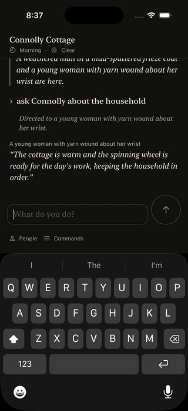

Each speaker is told only what they could know
PR 2232 · issue 2222 · iPhone 17 Pro simulator against limerick-prod, 2026-10-11. Simulator run, not physical-iPhone validation.

rundale-dialogue v1. The first minute is the app building and launching.What changed
The rundale-dialogue v1 input is replaced in place with the dynamic NPC context snapshot (§6, §7). Each speaker now gets their authored mood, the game date, clock time and part of day, the weather, today's festival, the people in the room, whether they know the player's name, and how they came to answer. Known people no longer carry live locations, other places are described without their occupants, and recent conversation holds only exchanges the speaker witnessed. Each committed exchange records the NPCs present; exchanges in older saves count as witnessed only by their speaker.
Peig's snapshot as the engine builds it on the canonical world is peig-snapshot.json (the checked-in fixture the Endpoints suite validates).
Acceptance
| Criterion | Shown by | Result |
|---|---|---|
Row 23: Peig's snapshot has no live locations for others; present, mood, time, weather and player correct | a_speakers_snapshot_holds_only_what_the_speaker_could_know (production turn path) | pass |
| Row 24: an exchange with Peig in the village at 08:00 is absent from Mícheál's snapshot there at 15:00 | a_speaker_is_sent_only_the_exchanges_they_witnessed (production turn path) | pass |
| Later speakers see replies already committed in the same line | a_later_speaker_in_a_line_sees_the_replies_already_given | pass |
| Row 34: 1 May names Bealtaine; null on other days | the_snapshot_names_todays_festival | pass |
| Row 25: accepted dialogue agrees with the current location | test05LiveDialogueAgreesWithTheCurrentLocation, live, simulator | pass |
| Older saves load; their exchanges count as witnessed only by their speaker | exchanges_from_saves_without_witnesses_count_only_their_speaker (persistence) and two limerick-types tests | pass |
rundale-dialogue v1 replaced in limerick-prod; definitions verify exits 0 | replace rundale-dialogue@1 sha256:4b21a524…, then "published copies match the files" | done |
Live Endpoint suite
test01 streamed dialogue · test02 Stop · test03 free-form movement · test04 "Which Connolly do you mean?" · test05 location probe: all passed